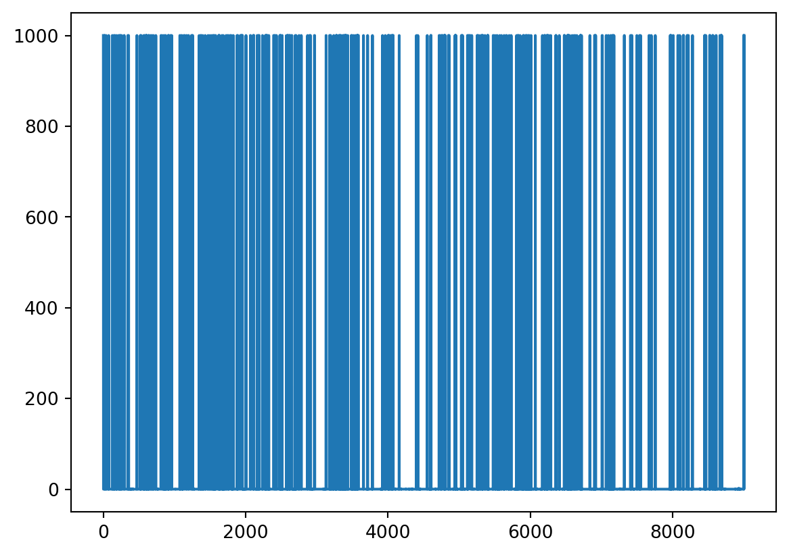

import pandas as pd
# create a timestamp
pd.Timestamp(year=2020, month=10, day=18, hour=12, minute=30, second=15)Timestamp('2020-10-18 12:30:15')In this section we will learn some basic handling of time series.
pandas represents an instant in time using the pandas.Timestamp class. For example:
import pandas as pd
# create a timestamp
pd.Timestamp(year=2020, month=10, day=18, hour=12, minute=30, second=15)Timestamp('2020-10-18 12:30:15')When we store multiple Timestamps in a pd.Series (for example when we have a column of dates) the data type of the column is set to datetime64[ns]:
# Notice the dtype of the column is datetime64
pd.Series([pd.Timestamp(2020,10,18),
pd.Timestamp(2020,10,17),
pd.Timestamp(2020,10,16)])0 2020-10-18
1 2020-10-17
2 2020-10-16
dtype: datetime64[ns]This is enough to get us started!
To exemplify some of the basic time series functionalities we’ll be using data about hourly precipitation in the county of Boulder, Colorado from 2000 to 2014. In September 2013, an unusual weather pattern led to some of the most intense precipitation ever recorded in this region, causing devastating floods throughout the Colorado Front Range. Our goal is to visualize precipitation data in 2013 and identify this unusual weather event.
This data was obtained via the National Oceanic and Atmosperic Administration (NOAA) Climate Data Online service. This dataset is a csv and can be acceses at this link. You can view the full documentation here. The following is a summary of the column descriptions:
Let’s start by reading in the data and taking a look at it.
# read in data
url = 'https://raw.githubusercontent.com/carmengg/eds-220-book/main/data/boulder_colorado_2013_hourly_precipitation.csv'
precip = pd.read_csv(url)
# check df's head
precip.head()| STATION | STATION_NAME | DATE | HPCP | Measurement Flag | Quality Flag | |
|---|---|---|---|---|---|---|
| 0 | COOP:055881 | NEDERLAND 5 NNW CO US | 20000101 00:00 | 999.99 | ] | |
| 1 | COOP:055881 | NEDERLAND 5 NNW CO US | 20000101 01:00 | 0.00 | g | |
| 2 | COOP:055881 | NEDERLAND 5 NNW CO US | 20000102 20:00 | 0.00 | q | |
| 3 | COOP:055881 | NEDERLAND 5 NNW CO US | 20000103 01:00 | 0.00 | q | |
| 4 | COOP:055881 | NEDERLAND 5 NNW CO US | 20000103 05:00 | 0.00 | q |
Let’s make a first attempt at plotting the precipitation:
precip.HPCP.plot()<AxesSubplot:>
There’s a few things going on with this graph:
There are many jumps close to 1000. This is clearly not right and these are outliers. Looking at the column description we can see 999.99 indicates the HPCP data is missing.
The x-axis values are given by the index of the dataframe and not relative to time.
We are only intersted in the precipitation data from 2013, this graph is trying to plot all our data.
Let’s fix each one of these issues separately.
The metadata states the missing values are indicated by the number 999.99. We can use this information to reload the dataframe indicating 999.99 is the missing value. To do this, we add the na_values parameter to the pd.read_csv() function to indicitate additional values that should be recognized as NA:
# read in csv indicating NA values
precip = pd.read_csv(url, na_values=[999.99])
# check updated df
precip.head()| STATION | STATION_NAME | DATE | HPCP | Measurement Flag | Quality Flag | |
|---|---|---|---|---|---|---|
| 0 | COOP:055881 | NEDERLAND 5 NNW CO US | 20000101 00:00 | NaN | ] | |
| 1 | COOP:055881 | NEDERLAND 5 NNW CO US | 20000101 01:00 | 0.0 | g | |
| 2 | COOP:055881 | NEDERLAND 5 NNW CO US | 20000102 20:00 | 0.0 | q | |
| 3 | COOP:055881 | NEDERLAND 5 NNW CO US | 20000103 01:00 | 0.0 | q | |
| 4 | COOP:055881 | NEDERLAND 5 NNW CO US | 20000103 05:00 | 0.0 | q |
Check the na_values parameter in the pd.read_csv() documentation to learn more about which values are identified as NA by default.
We can try making our plot again:
precip.HPCP.plot()<AxesSubplot:>This looks much better and we can already see there is something going on close to the end of the time series. We still need to set the index as the time.
Notice that the DATE column in our dataframe is not of type datetime. We can check this using the dtypes attribute for dataframes:
# check the dtypes of all columns
precip.dtypesSTATION object
STATION_NAME object
DATE object
HPCP float64
Measurement Flag object
Quality Flag object
dtype: objectThe object dtype means that (most likely) all values in that column are strings. We can convert strings to datetime objects using the to_datetime() pandas function:
pd.to_datetime() input: a pd.Series with strings that can be converted to datespd.to_datetime() output: a pd.Series with the strings converted to datetime objectsExample
# covert precip.DATE column to timedate objects
pd.to_datetime(precip.DATE)0 2000-01-01 00:00:00
1 2000-01-01 01:00:00
2 2000-01-02 20:00:00
3 2000-01-03 01:00:00
4 2000-01-03 05:00:00
...
9001 2013-12-22 01:00:00
9002 2013-12-23 00:00:00
9003 2013-12-23 02:00:00
9004 2013-12-29 01:00:00
9005 2013-12-31 00:00:00
Name: DATE, Length: 9006, dtype: datetime64[ns]We can overwrite the DATE column with this output:
# convert DATE column from string to timestamps
precip.DATE = pd.to_datetime(precip.DATE)
# check column data type is updated
print(precip.dtypes)
# check new values
precip.head()STATION object
STATION_NAME object
DATE datetime64[ns]
HPCP float64
Measurement Flag object
Quality Flag object
dtype: object| STATION | STATION_NAME | DATE | HPCP | Measurement Flag | Quality Flag | |
|---|---|---|---|---|---|---|
| 0 | COOP:055881 | NEDERLAND 5 NNW CO US | 2000-01-01 00:00:00 | NaN | ] | |
| 1 | COOP:055881 | NEDERLAND 5 NNW CO US | 2000-01-01 01:00:00 | 0.0 | g | |
| 2 | COOP:055881 | NEDERLAND 5 NNW CO US | 2000-01-02 20:00:00 | 0.0 | q | |
| 3 | COOP:055881 | NEDERLAND 5 NNW CO US | 2000-01-03 01:00:00 | 0.0 | q | |
| 4 | COOP:055881 | NEDERLAND 5 NNW CO US | 2000-01-03 05:00:00 | 0.0 | q |
And we can make another try at plotting our precipitation data:
precip.plot(x='DATE', y='HPCP')<AxesSubplot:xlabel='DATE'>Notice the x-axis is now neatly organized into years.
At its core, we have time series data if our data frame is indexed by moments in time. Using our DATE column as the index will allows us to do many operations with respect to time, including subsetting and resampling.
Updating the index of a dataframe is simple, we use the set_index() method. It’s general syntax is
df = df.set_index(new_index)where new_index is:
pd.Series of the same length as our data frame (we need one index per row!).Notice that set_index does not modify the data frame in place.
Example
In our precipitation data this is:
# set DATE coumn as index
precip = precip.set_index('DATE')
# check new index
precip.head()| STATION | STATION_NAME | HPCP | Measurement Flag | Quality Flag | |
|---|---|---|---|---|---|
| DATE | |||||
| 2000-01-01 00:00:00 | COOP:055881 | NEDERLAND 5 NNW CO US | NaN | ] | |
| 2000-01-01 01:00:00 | COOP:055881 | NEDERLAND 5 NNW CO US | 0.0 | g | |
| 2000-01-02 20:00:00 | COOP:055881 | NEDERLAND 5 NNW CO US | 0.0 | q | |
| 2000-01-03 01:00:00 | COOP:055881 | NEDERLAND 5 NNW CO US | 0.0 | q | |
| 2000-01-03 05:00:00 | COOP:055881 | NEDERLAND 5 NNW CO US | 0.0 | q |
Since we know the default behaviour of plot() is to use the index as the x-axis and make a line plot for each numeric column, we can simplify our plot making like this:
precip.plot()<AxesSubplot:xlabel='DATE'>
pandas has great functionality to subset a dataframe when using a time index. These are some examples:
# select data from a given month and year
# use loc['year-month']
precip.loc['2013-09']| STATION | STATION_NAME | HPCP | Measurement Flag | Quality Flag | |
|---|---|---|---|---|---|
| DATE | |||||
| 2013-09-01 00:00:00 | COOP:055881 | NEDERLAND 5 NNW CO US | NaN | ] | |
| 2013-09-01 01:00:00 | COOP:055881 | NEDERLAND 5 NNW CO US | NaN | [ | |
| 2013-09-01 00:00:00 | COOP:050183 | ALLENSPARK 2 SE CO US | NaN | ] | |
| 2013-09-01 01:00:00 | COOP:050183 | ALLENSPARK 2 SE CO US | NaN | [ | |
| 2013-09-01 00:00:00 | COOP:055121 | LONGMONT 6 NW CO US | NaN | } | |
| ... | ... | ... | ... | ... | ... |
| 2013-09-23 02:00:00 | COOP:050843 | BOULDER 2 CO US | 0.2 | ||
| 2013-09-27 10:00:00 | COOP:050843 | BOULDER 2 CO US | 0.1 | ||
| 2013-09-27 15:00:00 | COOP:050843 | BOULDER 2 CO US | 0.1 | ||
| 2013-09-27 17:00:00 | COOP:050843 | BOULDER 2 CO US | 0.1 | ||
| 2013-09-27 18:00:00 | COOP:050843 | BOULDER 2 CO US | 0.1 |
128 rows × 5 columns
# select data from a given year
# use loc['year']
precip.loc['2013']| STATION | STATION_NAME | HPCP | Measurement Flag | Quality Flag | |
|---|---|---|---|---|---|
| DATE | |||||
| 2013-01-01 01:00:00 | COOP:055881 | NEDERLAND 5 NNW CO US | 0.0 | g | |
| 2013-01-10 02:00:00 | COOP:055881 | NEDERLAND 5 NNW CO US | NaN | [ | |
| 2013-01-13 00:00:00 | COOP:055881 | NEDERLAND 5 NNW CO US | NaN | ] | |
| 2013-01-26 20:00:00 | COOP:055881 | NEDERLAND 5 NNW CO US | 0.1 | ||
| 2013-01-28 23:00:00 | COOP:055881 | NEDERLAND 5 NNW CO US | 0.1 | ||
| ... | ... | ... | ... | ... | ... |
| 2013-12-22 01:00:00 | COOP:050843 | BOULDER 2 CO US | NaN | [ | |
| 2013-12-23 00:00:00 | COOP:050843 | BOULDER 2 CO US | NaN | ] | |
| 2013-12-23 02:00:00 | COOP:050843 | BOULDER 2 CO US | 0.1 | ||
| 2013-12-29 01:00:00 | COOP:050843 | BOULDER 2 CO US | NaN | [ | |
| 2013-12-31 00:00:00 | COOP:050843 | BOULDER 2 CO US | NaN | ] |
662 rows × 5 columns
We can use this selection to plot data as usual. Notice we have a lot of gaps due to missing data.
precip.loc['2013'].plot()<AxesSubplot:xlabel='DATE'>Resampling a time series means converting a time series from one frequency to another. For example, monthly to yearly (downsampling) or weekly to daily (upsampling). We can resample with the resample() method. The simplest use is to call
df.resample(new_frequency).aggregator_function()where: - new_frequency is a string representing the new frequence to resample the data, for example 'D' for day, w for week, M for month, Y for year, and - aggregator_function() is the function we will use to aggregate the data into the new frequence. For example, max(), min(), sum() or average().
resample() works similarly to groupby() in the sense that you need to specify a way to aggregate the data to get any output.
Example
Our 2013 precipitation data has hourly frequency and we want to resample it to daily frequency.
# resample 2013 hourly data to daily frequency
# nothing happens
precip.loc['2013'].resample('D')<pandas.core.resample.DatetimeIndexResampler object at 0x7f2b11ceb510>To get an output we need to add an aggregator function that indicates how we want to summarize the data that falls on each day. In this case we want the total precipitation on a day, so we will aggreagte using sum():
# total daily precipitation in 2013
daily_precip_2013 = precip.loc['2013'].resample('D').sum()
daily_precip_2013| HPCP | |
|---|---|
| DATE | |
| 2013-01-01 | 0.0 |
| 2013-01-02 | 0.0 |
| 2013-01-03 | 0.0 |
| 2013-01-04 | 0.0 |
| 2013-01-05 | 0.0 |
| ... | ... |
| 2013-12-27 | 0.0 |
| 2013-12-28 | 0.1 |
| 2013-12-29 | 0.0 |
| 2013-12-30 | 0.1 |
| 2013-12-31 | 0.0 |
365 rows × 1 columns
Notice the index now is every day in 2013. We should rename that column since it is not longer hourly precipitation:
# rename column
daily_precip_2013 = daily_precip_2013.rename(columns={'HPCP':'daily_precipitation'})Finally, we can plot our data:
daily_precip_2013.plot(ylabel='daily precipitation (in)',
xlabel='date',
title='Precipitation in Boulder, CO during 2013',
legend=False)<AxesSubplot:title={'center':'Precipitation in Boulder, CO during 2013'}, xlabel='date', ylabel='daily precipitation (in)'>As usual, there’s so much more to learn about time series data. These documents will allow you to dive deeper:
📖 pandas getting started tutorials - How to handle time series data with ease
📖 Time Series Chapter, Python for Data Analysis, Wes McKinney
This lesson was adapted from Dr. Sam Stevenson’s lecture on Data quality control and outliers: 1D time series and Earth Lab’s Lesson 1. Work With Datetime Format in Python - Time Series Data.